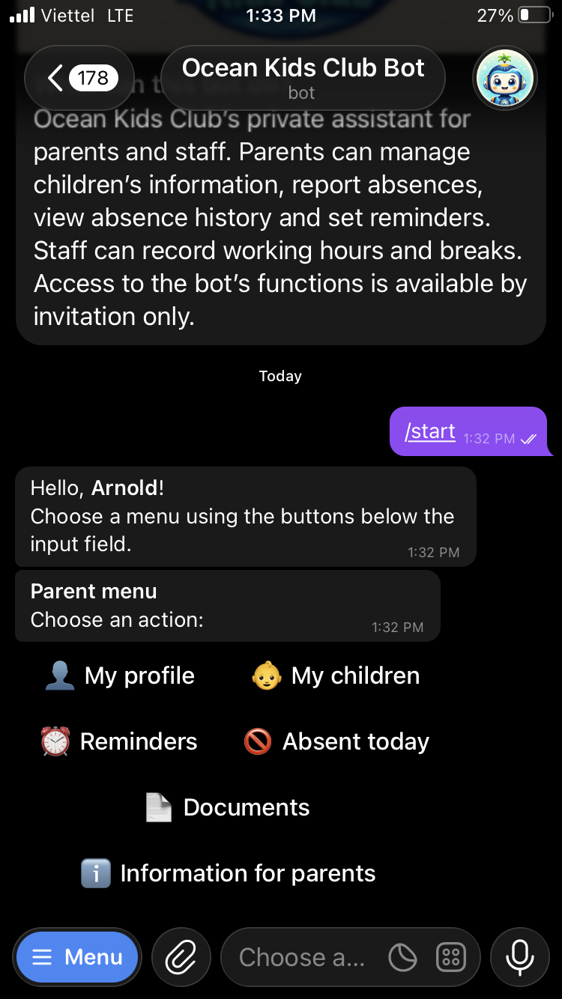
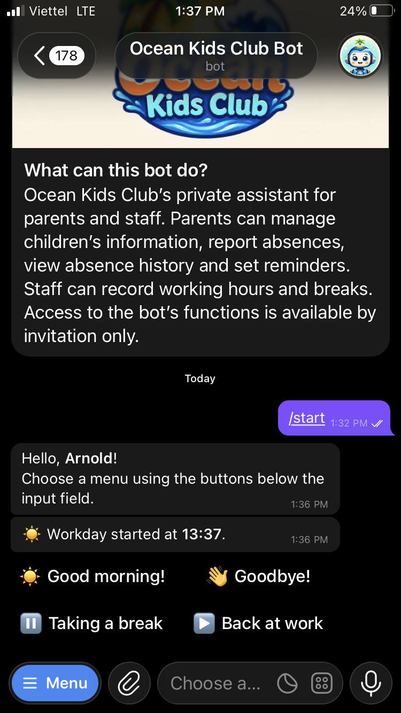
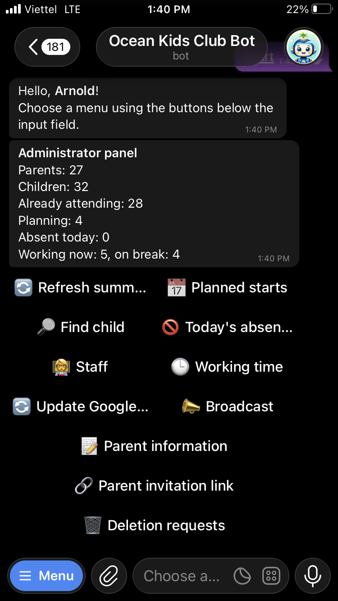
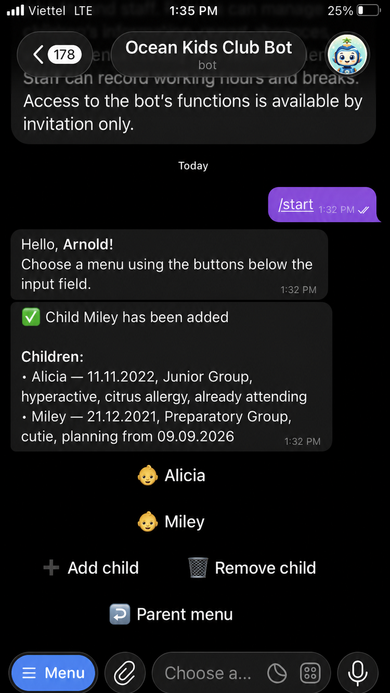
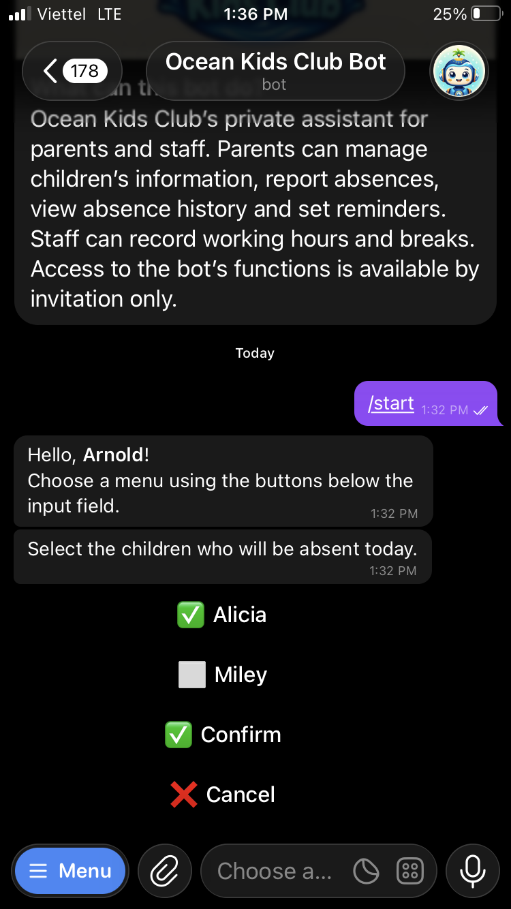
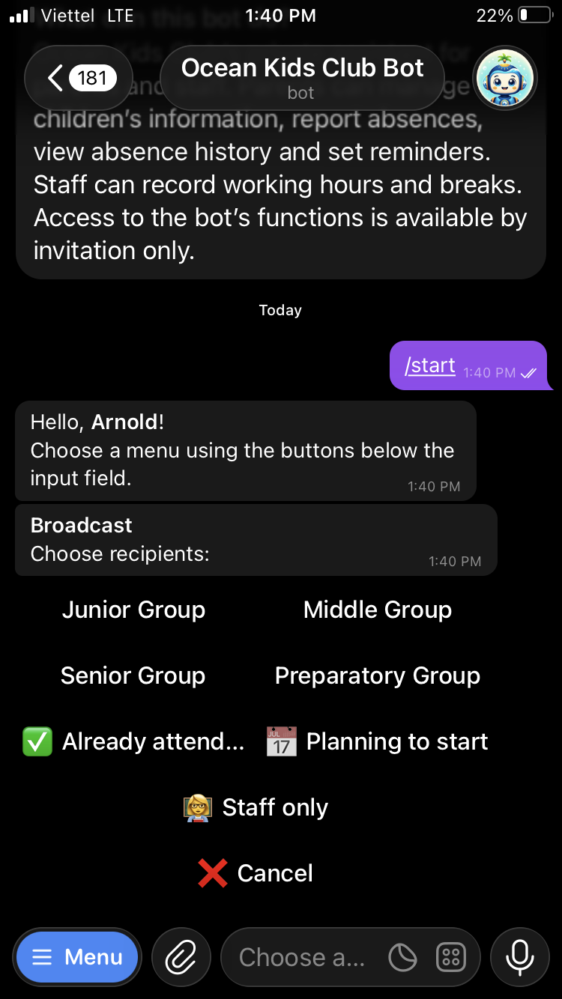
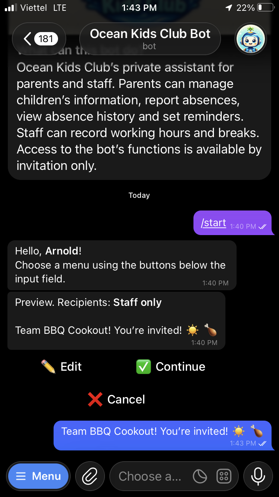
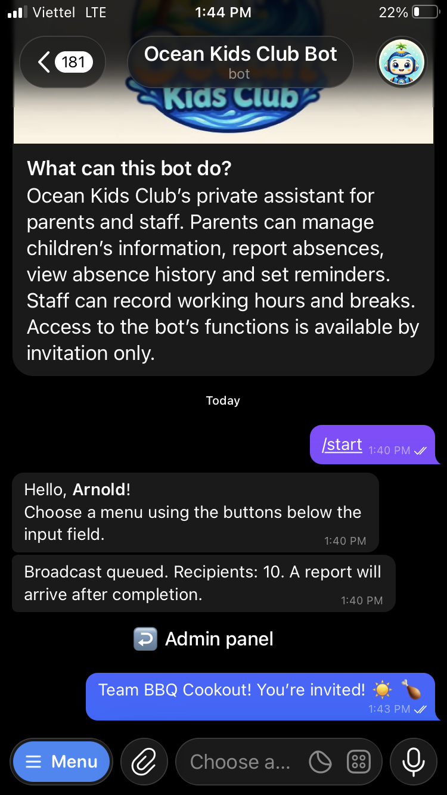

Bilingual interface
English and Russian interaction within the same Telegram product.
A custom operations system built around Telegram—connecting families, staff, records, reminders and reporting in one dependable workflow.
The interface lives in Telegram. The product behind it is an operational system with structured data, role-specific workflows and scheduled processes.
Put daily operations inside the interface people already know.
Ocean Kids Club coordinates recurring work between parents, staff and administrators. Registration, child information, absences, attendance and reminders all need to remain clear as the system grows.
OMLAYER designed the product as connected layers: a bilingual Telegram interface, workflow logic, an authoritative database, scheduled jobs and optional reporting to Google Sheets.
Each capability belongs to the same operational model rather than becoming another disconnected tool.
English and Russian interaction within the same Telegram product.
Guided onboarding that turns conversations into structured records.
Information connected to the relevant parent and operational workflow.
A consistent way to submit, store and process absence information.
Dedicated staff interaction built into the same operational environment.
Scheduled jobs and optional Sheets reporting reduce repetitive follow-up.
Each person sees only the actions relevant to their role, while the records remain connected underneath.
Profiles, children, absences, reminders, documents and essential information.

Start, pause, resume and close a workday without a separate timesheet app.

Live summaries, records, attendance, reporting, broadcasts and administration.

Screens contain demonstration data. The production system is private and invite-only.
Frequent tasks stay lightweight for people while becoming structured, dependable data for the organisation.
Parents can maintain child information through a guided interface instead of sending details across separate chats.

Select the relevant child and confirm. The absence becomes actionable operational data immediately.

Administrators choose an audience, preview the message and confirm before a queued broadcast is delivered.



Telegram is the visible layer. Validation, orchestration, records and reporting remain separated behind it so each part can evolve responsibly.
People interact with a familiar chat interface. Cloudflare Workers receive and route events, D1 stores operational data, scheduled jobs handle time-based work, and reporting can be sent asynchronously to Google Sheets.
The product is live and largely complete, with ongoing polish based on real operational use.
No separate application to teach, install or remember.
Chat interactions resolve into dependable records and workflows.
Parents, staff and administrators reach the tasks relevant to them.
Interface, workflows, data and reporting can improve as distinct layers.
Chant OM. We'll build your digital layer.
Tell us what people repeat, where information gets lost and what needs to connect. We’ll respond with clear questions and a practical next step.